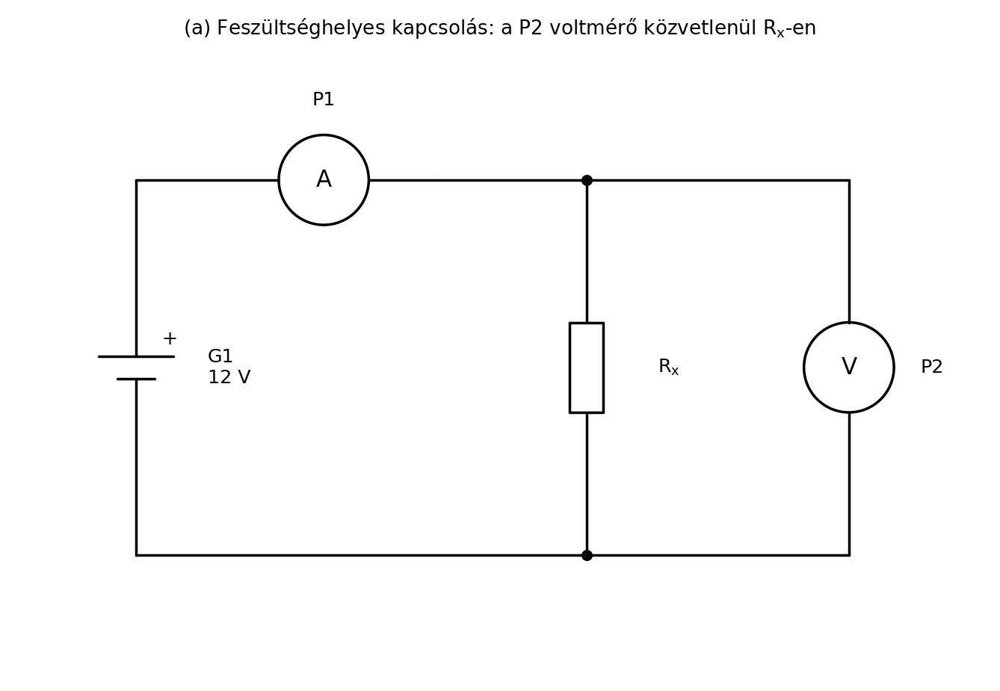
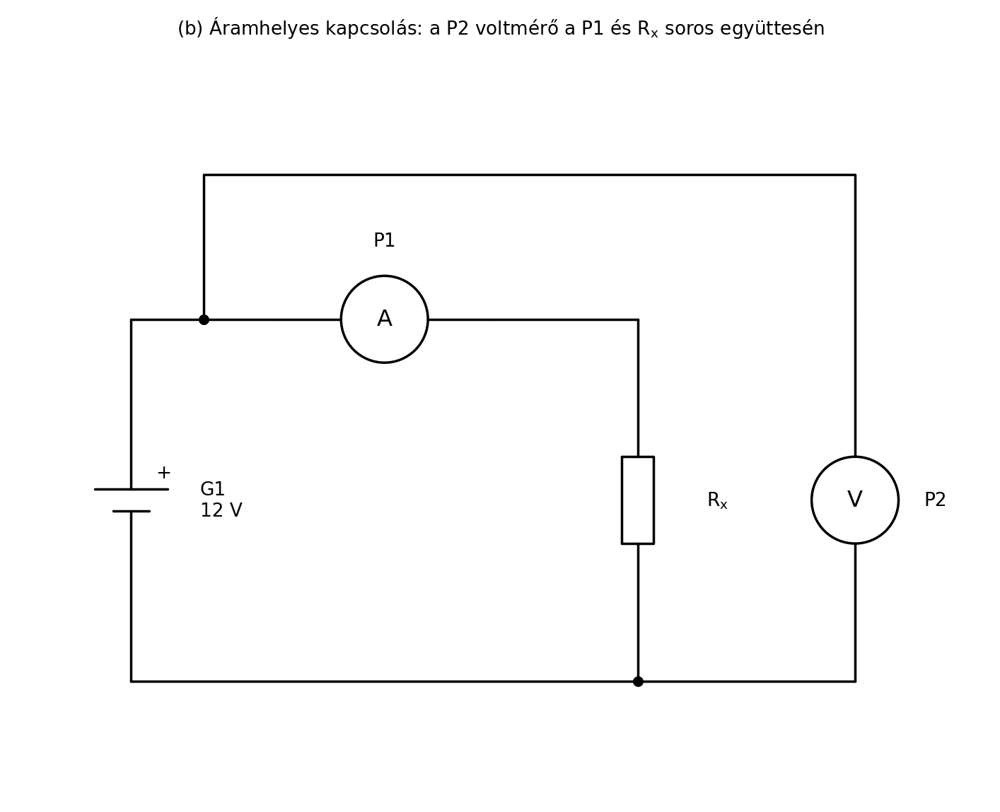

Tegyük fel, hogy hibakeresés közben megmérsz egy tápfeszültséget, és a műszer 11,8 V-ot mutat. Azt feltételezed, hogy a 12 V-os áramkör rendben van, pedig valójában a műszer pontossága miatt a valódi érték akár 12,4 V vagy 11,2 V is lehet. Ha nem érted, mennyire bízhatsz a műszeredben, téves irányba indulsz el, alkatrészt cserélsz, vagy épp figyelmen kívül hagysz egy életveszélyes hibát. A mérési hiba ismerete nem statisztikai szőrszálhasogatás, hanem a hibakeresés és a hibavédelmi (régi szóval érintésvédelmi) mérések alapja.
Az alfejezet célja, hogy a mérési eredmény mellé mindig oda tudd tenni a kérdést: „Mekkora a hibahatár, és milyen belső ellenállással mértek?” Ezt a szemléletet viszed tovább a Multiméter, lakatfogó és mérési kategóriák és az Oszcilloszkóp és jelalakok alfejezetekbe.
Definíció. A mérés egy fizikai mennyiség (feszültség, áram, ellenállás stb.) összehasonlítása egy ismert etalonnal vagy egy hitelesített műszerrel. A mérés célja a valódi érték () minél jobb megközelítése, amelyet azonban sosem ismerhetünk meg tökéletesen.
Definíció. A mérés során fellépő abszolút hiba () a mért érték () és a valódi érték () különbsége:
Definíció. A relatív hiba () a hibának a valódi (vagy a mért) értékhez viszonyított aránya, százalékban:
A relatív hiba sokkal informatívabb a szerelő számára: teljesen más, ha 1 V hibával 1000 V-ot, vagy ha 10 V-ot mérünk.
Definíció. A mért érték bizonytalansága a mérési hiba lehetséges intervalluma. Például ha az abszolút hibahatár , akkor a keresett valódi érték tartományban van.
1. Szisztematikus (rendszeres) hibák. A mérőeszköz rossz kalibrációjából, elöregedett elemeiből, vagy a mérési elrendezés állandó hibájából adódnak. Egy rosszul nullázott, régi analóg műszer mindig ugyanabba az irányba téved. A szisztematikus hiba a mérés megismétlésével nem oldható fel.
2. Véletlen hibák. A hálózati zaj, a hőmérséklet-ingadozás, a műszer digitális utolsó számjegyének ugrálása véletlen jellegű. Több mérés átlagolásával csökkenthető a hatásuk.
3. Leolvasási (durva) hibák. Az emberi leolvasás során keletkeznek. Analóg műszernél a mutatót nem merőlegesen nézve parallaxishiba lép fel; digitálisnál rossz méréshatárból számolunk, vagy a tizedespontot tévesztjük el.
Az analóg (mutatós) műszeren több leolvasási csapda van egyszerre, ezért érdemes a részeit ismerni. Az alábbi ábra bal oldalán egy feszültségmérő számozott részei láthatók: az 1 skálalapon két skála van (0…300 és 0…100), a 2 tükörsáv a parallaxis kiszűrésére szolgál, a 3 késélű mutató itt 200 V-ot mutat a 300 V-os határon, a 4 jel (1,5) a pontossági osztály, a 6 csavarral a mutató mechanikus nullpontja állítható, a 7 kapcsoló a méréshatárt választja. A jobb oldali két kép oldalnézetben mutatja, miért kell a mutatót merőlegesen nézni.
Helyes leolvasáskor a szem a mutató fölött van, és a mutató pontosan eltakarja a saját tükörképét; ha a mutató és tükörképe kettéválik, a fejedet kell elmozdítanod, nem a leolvasott számot „korrigálnod”. Mérés előtt feszültségmentes állapotban nézd meg, hogy a mutató a nullán áll-e, és ha nem, a nullázócsavarral (6) állítsd be. A HTML-kiadásban az egyes részekre mutatva megjelenik a nevük és a szerepük.
Hiba. A rossz skála leolvasása nem csak pontatlan, hanem életveszélyes döntéshez is vezethet, például ha egy áramkör feszültségmentességét ellenőrzöd, és valójában feszültség alatt van.
Definíció. A pontossági osztály (accuracy class) a műszer legnagyobb megengedett relatív hibája a méréshatár (végkitérő) százalékában kifejezve. Ez a gyártó által garantált hibakorlát. Az osztályt általában szám jelzi, például 1,5 (ami -ot jelent), 0,5, 2,5 stb. Ez az analóg (mutatós) műszerek jellemzője, a skálalapra írják. A digitális műszerek adatlapja a hibát általában alakban adja meg: ennek első tagja a mért értékre vetül, a második a kijelző felbontására (részletesen: Multiméter, lakatfogó és mérési kategóriák).
Definíció. A méréshatár () a műszer által megjeleníthető legnagyobb érték (például , ). Analóg műszernél a pontossági osztályból adódó hibát mindig a méréshatárhoz és nem a mért értékhez képest kell számolni.
Összefüggés. Ha a műszer pontossági osztálya , a méréshatára , akkor a legnagyobb megengedett abszolút hiba:
Figyelem. A relatív hiba a méréshatár alsó tartományában megnő, mert az abszolút hibát a mért értékkel osztjuk. Ezért az analóg műszert úgy kell méréshatárt választani, hogy a mutató a skála felső kétharmadában legyen. Digitális műszernél hasonló a helyzet, bár ott a kijelző felbontása is beleszól.
A mérőműszer nem „ingyen” mér: áramot vesz fel az áramkörből, és ezzel megváltoztatja a mért mennyiséget. Ezt hívjuk a mérőműszer terhelő hatásának.
Definíció. A belső ellenállás () a mérőműszer bemeneti ellenállása. Feszültségmérőnél ez a műszeren átfolyó áramot határozza meg, árammérőnél pedig a hálózatba sorosan beiktatott ellenállást jelenti.
Szabály. A jó feszültségmérő belső ellenállása a mért kör ellenállásához képest minél nagyobb legyen, hogy elhanyagolható áramot vegyen fel. A jó árammérő belső ellenállása minél kisebb legyen, hogy ne vigyen be számottevő feszültségesést.
Megjegyzés. A régi analóg, mutatós műszerek belső ellenállása gyakran csak … (például -os határon ). A modern digitális multimétereké általában a feszültségmérésnél.
1. Eltérítéses (közvetlen) módszer. A műszer mutatója vagy kijelzője közvetlenül a mérendő mennyiségre van kalibrálva. Jellemzői: gyors, kényelmes, de a műszer hibája és terhelő hatása benne van az eredményben. A multiméter és a lakatfogó ilyen.
2. Kiegyenlítéses (null) módszer. A mérendő feszültséget egy ismert, nagy pontosságú forrás feszültségével hasonlítjuk össze, amíg a kettő különbsége nulla nem lesz. Az egyensúlyban a műszer nem vesz fel áramot, ezért nincs terhelő hatása, és az eredmény csak az etalon/hiteles eszköz pontosságától függ. Példa: ellenállásmérés Wheatstone-híd használatával.
Az ismeretlen ellenállást egy feszültség- és egy árammérővel is meghatározhatjuk (U–I módszer, Ohm-törvény): . A két műszert kétféleképpen lehet bekötni, és egyik bekötés sem hibátlan: mindkettőben a műszerek terhelő hatása (az előző szakasz gondolata) okozza a hibát. A gyakorlatot tanműhelyben, törpefeszültségű (12 V-os) tápegységről végezzük.
Az (a) rajzon a P2 voltmérő közvetlenül az két kapcsára csatlakozik (feszültséghelyes kapcsolás), a (b) rajzon a P1 ampermérő és az soros együttesére (áramhelyes kapcsolás). Keresd meg mindkét rajzon azt a csomópontot, ahol az áram szétválik, és gondold végig, melyik műszer mér „többet” a valódinál.


Összefüggés (feszültséghelyes kapcsolás). A voltmérő a valódi -t méri, de az ampermérőn a voltmérő árama is átfolyik, ezért az ampermérő többet mutat. A mért ellenállás az és a voltmérő belső ellenállásának párhuzamos eredője, tehát kisebb a valódinál:
Összefüggés (áramhelyes kapcsolás). Az ampermérő a valódi -t méri, de a voltmérő az ampermérő belső ellenállásán eső feszültséget is méri. A mért ellenállás nagyobb a valódinál:
Számítás. Régi analóg műszerek: , . Hasonlítsuk össze a két kapcsolást három ellenálláson (relatív hiba: ):
| Feszültséghelyes | Áramhelyes | Jobb kapcsolás | |||
|---|---|---|---|---|---|
| feszültséghelyes | |||||
| áramhelyes | |||||
| áramhelyes |
Például -nál: , illetve .
Szabály. A két kapcsolás hibája ott egyforma, ahol (itt ). Ha , a feszültséghelyes, különben az áramhelyes kapcsolás a pontosabb. Röviden: kis ellenállást feszültséghelyesen, nagyot áramhelyesen mérünk. Modern, bemeneti ellenállású digitális voltmérővel a feszültséghelyes kapcsolás hibája a legtöbb szerelői esetben elhanyagolható (például -nál csak ).
A műszerek méréshatárának kiterjesztését (az ampermérő söntjét és a voltmérő előtét-ellenállását) a Párhuzamos kapcsolás és áramosztó, illetve a Soros kapcsolás és feszültségosztó alfejezet tárgyalja; a nagyon kis ellenállások (tekercsek) négyvezetékes mérését a Transzformátor- és gépmérések alfejezet mutatja be.
A jegyzőkönyv a mérés „dokumentációja”. Hibakereséskor segít következtetni a jelenség okára, felülvizsgálatkor pedig jogilag is bizonyítja a mérés megtörténtét. Üres alapmérési lap: Nyomtatható jegyzőkönyvek és sablonok, A7.
Alapvető jegyzőkönyvminta:
Kalibrálás, hitelesítés, napi ellenőrzés. Három különböző dolog:
A jegyzőkönyvbe kerüljön be a műszer gyári száma és a kalibrálás dátuma. Lejárt kalibrálású műszerrel kapott eredmény nem dokumentálható felülvizsgálati eredményként (Védelmi mérések gyakorlata és a jegyzőkönyv kitöltése).
Szabály. A jegyzőkönyvben a mérési eredményt mindig
a műszer által ténylegesen kijelzett pontossággal, de nem több
értékes jeggyel add meg. Ha a digitális műszer
kijelzője 230,0 V-ot mutat, az négy értékes jegy; te ne írd
mellé, hogy „körülbelül 229,9875 V”. Ha analóg skálán csak 10 V-os
felbontással lehet leolvasni, akkor az utolsó jegy becsült.
Döntés határérték közelében. Védelmi mérésnél a kijelzett szám nem „pontos érték”: a megfelelőséget a kedvezőtlen irányba a hibahatárral eltolt értékkel ítéljük meg. Ha a hibasáv metszi a határértéket, az eredmény nem dönthető el egyértelműen: ismételt mérés, pontosabb műszer vagy módszer, illetve a biztonságos („nem megfelelő”) döntés és a hiba javítása következik.
Jegyzőkönyvben a mért érték mellé kerüljön a műszer típusa és pontossága; a megfelelőségi rovatba szükség esetén ez is beírható: „nem dönthető el – ismételt mérés”. A mérések részletei: Mérések II.: hurokimpedancia, zárlati áram, FI-vizsgálat, Védelmi mérések gyakorlata és a jegyzőkönyv kitöltése. A feszültség- és áramhelyes kapcsolás laborbeli gyakorlata: Alapmérések gyakorlata: feszültség, áram, ellenállás, teljesítmény.
Tipikus hibák és a helyes gyakorlat:
Egy szerelő egy lakáselosztóban azt tapasztalta, hogy a FI-relé (áram-védőkapcsoló) időnként lekapcsol. A hibakeresés során megmérte a szigetelési ellenállást. A szigetelésmérés a leválasztott kábelezésen rendben volt, a hiba csak üzemben, nedvességnél jelentkezett. Ezért a szerelő a fázis- és a nullavezetőt együtt átfogva, szivárgóáram-mérésre alkalmas (mA felbontású) lakatfogóval megmérte a különbségi áramot: szivárgást talált (ellenőrizendő: a műszer adatlapi pontossága). Egy -es áram-védőkapcsoló () alatt még nem old ki, -nél ki kell oldania (ellenőrizendő: MSZ EN 61008-1 / 61009-1); a nedvességnél tovább nő, és összeadódik a kör többi készülékének szivárgásával, így együtt már elérheti a kioldási tartományt. Ezért egy áram-védőkapcsoló mögött a tartós szivárgások összege lehetőleg ne haladja meg kb. -t (ellenőrizendő: MSZ HD 60364-5-53). A fogyasztókat egyenként leválasztva kiderült, hogy a mosógép fűtőbetétjének szigetelési hibája (fűtőszál–burkolat, a védővezető felé) okozta a szivárgást; ez földzárlat, nem zárlat. A tanulság: kis áramot csak arra alkalmas műszerrel és méréshatáron szabad mérni, a hibahatár számításával (lásd Áram-védőkapcsoló (FI) és kiegészítő védelem). A csak a nullavezetőre tett lakatfogó az üzemi áramot méri, a szivárgásról nem mond semmit.
Gyakorlás: ennek az alfejezetnek a kidolgozott példái, gyakorlatai és megoldással ellátott feladatai az Összefoglaló feladatgyűjtemény villanyszerelő tanulóknak című kötet 8.1 szakaszában találhatók.
A mérés sohasem tökéletes; a mérési hiba a műszer és a mérési módszer velejárója. Az abszolút hiba () és a relatív hiba () összekapcsolják a hibát a mérési eredménnyel. A műszer pontossági osztálya a méréshatár százalékában adja meg a legnagyobb megengedett hibát, ezért a méréshatárt mindig úgy kell megválasztani, hogy a mutató a skála felső kétharmadában legyen. A műszer belső ellenállása meghatározza a terhelő hatást: a feszültségmérőnek nagy, az árammérőnek kis belső ellenállással kell rendelkeznie. Ezen alapelvek nélkül lehetetlen a hibakeresés és a mérési jegyzőkönyv helyes értelmezése. Az itt tanultakat a Multiméter, lakatfogó és mérési kategóriák és az Oszcilloszkóp és jelalakok alfejezetekben használjuk fel a gyakorlati mérések során.
A mérési jegyzőkönyvben a mért értéket a műszer által garantált pontossággal, a méréshatár és a pontossági osztály feltüntetésével kell rögzíteni, kerülve a hamis, túlzott tizedesjegyeket. A hibás méréshatár-választás, a terhelő hatás elhanyagolása és a parallaxishiba tipikus hibaforrások, amelyek a villanyszerelő munkájában téves diagnózishoz és veszélyes döntésekhez vezethetnek.